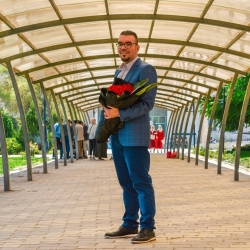

About Me
A small corner to introduce myself..

Syrian, living in Berlin, Germany. Studied Computer Engineering in Damascus University, Syria. Natively I speak Arabic language; My English is excellent and lately I've been learning Germany (A2 level). Moved from Damascus, Syria to Berlin since June 2021, then after a while I started a full time job as a Software Engineer @Lemontaps and it's going great since then!
Beside coding, I like to read in different fields especially in literature. Also I like watching football matches for my favorite team Real Madrid and I love doing sports like running as a daily habit.
BIO
Syrian, living in Berlin, Germany. Studied Computer Engineering in Damascus University, Syria. Natively I speak Arabic language; My English is excellent and lately I've been learning Germany (A2 level). Moved from Damascus, Syria to Berlin since June 2021, then after a while I started a full time job as a Software Engineer @Lemontaps and it's going great since then!
Beside coding, I like to read in different fields especially in literature. Also I like watching football matches for my favorite team Real Madrid and I love doing sports like running as a daily habit.